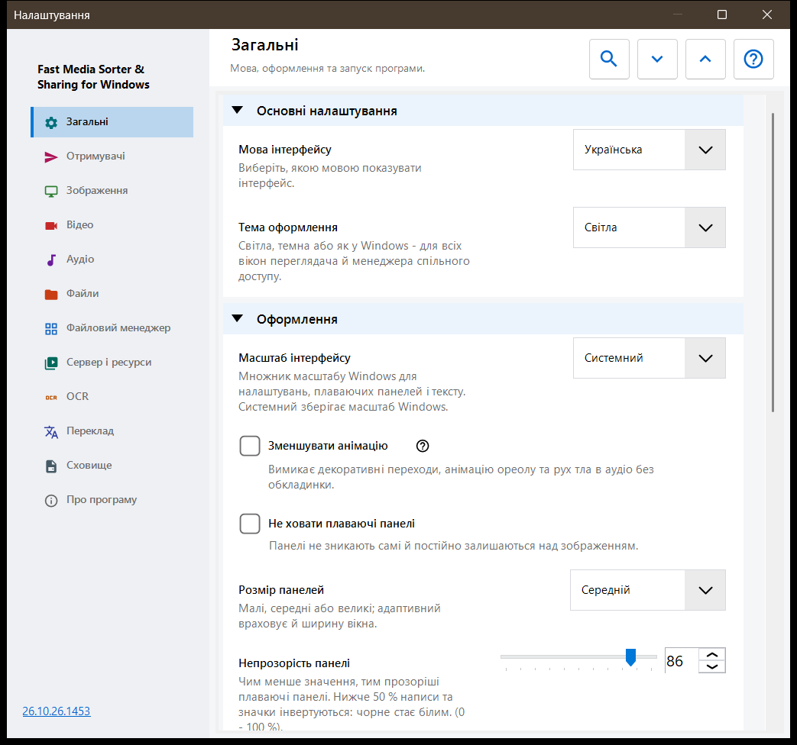
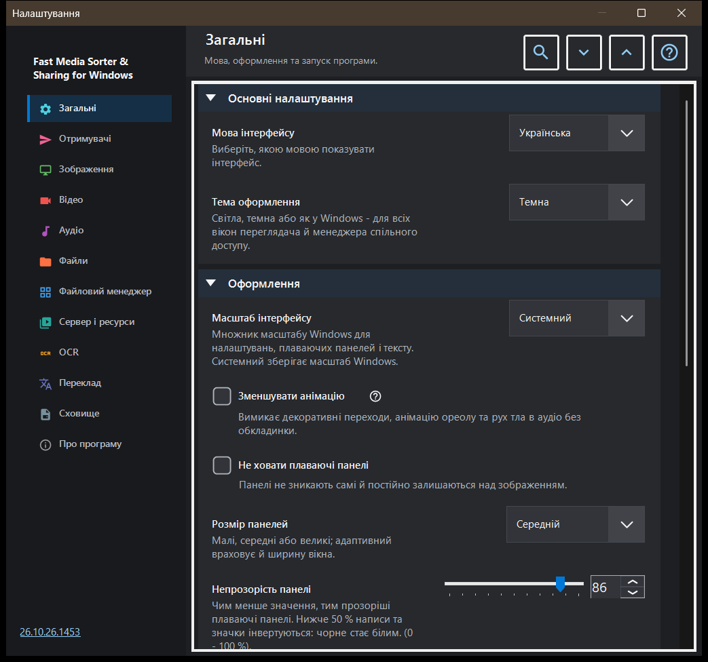

Налаштування
Налаштування
Призначення
Вікно «Налаштування» збирає всі параметри переглядача. Воно відкривається за F2, кнопкою «Налаштування» на панелі інструментів або з файлового менеджера панелі зображень кнопкою «Налаштування..», яка одразу переходить на сторінку Файловий менеджер. Сторінки перелічено в бічній панелі ліворуч, а групи на сторінці можна згортати.


Порядок дій
- Виберіть сторінку в бічній панелі або введіть слово в поле «Пошук налаштувань», щоб знайти параметр.
- Кнопки «Розгорнути всі» і «Згорнути всі» розгортають або згортають усі групи сторінки.
- Змініть потрібні параметри.
- Натисніть Esc, щоб закрити вікно.
Елементи вікна
Загальні
Мова й тема (Тема оформлення), далі вигляд плаваючих панелей: масштаб інтерфейсу, зменшення анімації, закріплення, розмір, прозорість, кути, інформація поверх зображення та приховування курсора миші. Група Запуск визначає, що відбувається під час старту (відкривати під час запуску, продовжити з останнього файлу, дозволити нові вікна), і містить «Показати привітальні кроки знову» - це знову відкриває вікно привітання. Група Додаткові налаштування експортує та імпортує додаткові налаштування й повертає значення за замовчуванням.
Отримувачі
Десять папок, до яких переносять файл клавіші 1-9 і 0; Shift із цифрою верхнього ряду копіює до тієї самої папки. У таблиці по рядку на кожну клавішу: виберіть рядок і натисніть «Папка на цьому комп'ютері..», «Ресурси» (папка на SFTP або SMB) чи «Очистити», або перетягніть папку на рядок. Група Вигляд таблиці отримувачів задає положення, ширину, розмір тексту, прозорість і кількість видимих рядків таблиці поверх зображення, а параметр «Таблиця отримувачів поверх зображення» вмикає й вимикає цю таблицю.
Зображення
Як відкриваються й виглядають зображення: масштаб нового зображення, автоповорот за тегом EXIF, «Масштабування колесом», анімована графіка через відеоплеєр та відомості про розмір зображення, розмір файлу й дату. Група Фон зображення задає колір навколо картинки, Перспективний фон і німб (динамічний, анімований, швидкість). Група Поведінка слайд-шоу задає інтервал, випадковий порядок, чи зупиняє показ ручне гортання та що робить інтерфейс під час показу. У додатковій частині - якісне масштабування та розмір картки мініатюри.
Відео
Чи беруть відеофайли участь у перегляді, автовідтворення, дія наприкінці ролика, запам'ятовування позиції та «Спільний звук: аудіо та відео». Далі йдуть групи з бажаними мовами звуку й субтитрів та керуванням відтворенням: що робить одинарний клац, затримка елементів керування, елементи керування на паузі й три кроки перемотування.
Аудіо
Чи беруть аудіофайли участь у перегляді, дія наприкінці треку, гучність за замовчуванням і запуск без звуку. Група відомостей і керування містить постійно видиму аудіопанель, візуалізацію для файлів без обкладинки та таймер сну.
Файли
Робота з файлами: перехід до наступного після копіювання, що робити за збігу імен і після копіювання чи перенесення, рядок стану під час файлових операцій, створення відсутньої папки призначення, «Видаляти до Кошика» і підтвердження видалення. Група Типи файлів охоплює вкладені папки, розширення, документи, розмір попереднього перегляду тексту та інші файли. Решта груп задають нещодавні файли й папки, обмеження для архівів і захищені файли .fd-sec. У групі Клавіші та асоціації є кнопка «Сполучення клавіш», яка відкриває вікно гарячих клавіш, і асоціації файлів для зображень та відео.
Файловий менеджер
Параметри файлового менеджера панелі зображень: Режим відображення (плитки або список), Фільтр вмісту, приховані файли та дія для файлів, що не є медіа. Група Місця вибирає, які місця показувати (локальні, ресурси, пристрої), і містить «Запам'ятовувати сортування».
Сервер і ресурси
Список Сервери та мережеві папки містить ресурси SFTP та SMB, які переглядач відкриває й використовує як отримувачів. Група Android / SFTP потрібна, щоб публікувати папки цього комп'ютера через SFTP для застосунку Android; у ній є посібник із підключення та кнопка «Керування SFTP-сервером для андроїд-клієнта..».
OCR
«Увімкнути OCR» вмикає розпізнавання тексту, а «Запускати автоматично» дає змогу запускатися йому самому. Група Розпізнавання тексту задає мову оригіналу, якість, режим і завантаження мовних даних.
Переклад
Виберіть сервіс («Сервіс перекладу») і мову перекладу («Мова перекладу»); решта полів містять адресу сервісу, локальний сервер Ollama, модель і ключ API. Група Переклад поверх зображення задає прозорість і видимість панелі перекладу поверх картинки.
Сховище
Обмеження кешів і кнопка очищення для кожного з них: декодовані зображення, мініатюри панелі зображень, архіви та мережеві ресурси. Дисковий кеш OCR має параметр «Кешувати результати на диску», власне обмеження й кнопку очищення.
Про програму
Відомості про продукт і посилання: Оновлення, Скидання налаштувань, пов'язані проєкти, Довідка до програми, сайт, GitHub, випуски, сторінка про конфіденційність, ліцензія MIT і повідомлення про сторонні компоненти. «Надіслати журнали автору» показує вікно згоди зі списком того, що потрапить в архів, і потім передає архів поштовій програмі; програма не відкриває для цього мережевих з'єднань.
Документи
Увімкніть читання PDF окремо від фільтрів сортування. Виберіть одну сторінку, безперервне прокручування або розворот, кольори, масштаб, область пошуку та межі кешу. Кнопки сторінок змінюють сторінки, кнопки файлів - файли. Текстові елементи документа володіють B/N, цифрами та Delete. Esc повертає керування полотну. Скидання оформлення зберігає позиції та іменовані закладки. Читання вголос використовує встановлені голоси Windows. Паролі залишаються в сеансі. Локальна тимчасова копія дозволяє переміщати оригінал. Звичайний експорт не містить історії читання, закладок та оформлення окремих документів.